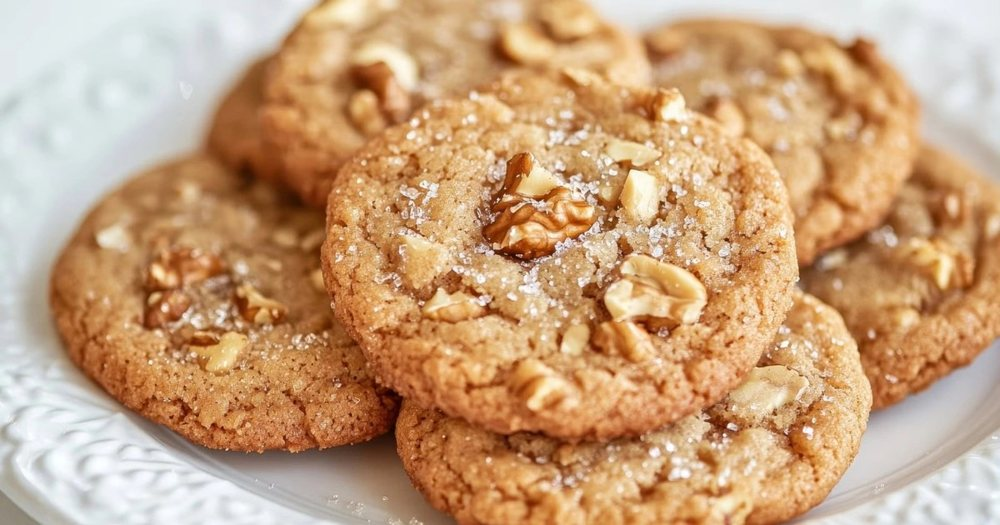

Doces · Biscoitos
Biscoitinhos de ameixa-preta

Ingredientes
- 1 xícara de manteiga
- 1 xícara de açúcar mascavo
- ½ xícara de açúcar
- 2 ovos
- 1 colher (sopa) de vinagre
- 1 colher (chá) de essência de baunilha
- 1 xícara de ameixas-pretas secas picadas
- 4 xícaras de farinha de trigo
- 1 colher (chá) de bicarbonato de sódio
- 1 colher (chá) de sal
- 1 xícara de nozes picadas
Modo de preparo
- Numa tigela, coloque a manteiga e os dois açúcares e bata bem. Adicione os ovos, um de cada vez, e bata até obter um creme leve.
- Junte o vinagre, a baunilha, as ameixas picadas e os ingredientes secos. Misture bem e adicione as nozes picadas. Forme com a massa 3 rolos com cerca de 5 cm de diâmetro cada um. Embrulhe-os em papel-alumínio e leve à geladeira por 1 noite.
- No dia seguinte, preaqueça o forno em temperatura média (200 °C). Retire os rolos da geladeira, corte a massa em rodelas finas e disponha numa assadeira sem untar. Asse no forno preaquecido até ficarem sequinhos (cerca de 12 minutos). Retire do forno, deixe esfriar e congele.
Observação
Você também pode abrir a massa gelada com um rolo de cozinha e recortá-la utilizando cortadores de biscoitos com formatos variados. Congelamento: leve os biscoitinhos ao freezer cobertos com plástico até congelarem; passe-os para um saco plástico, retire o ar e vede bem; etiquete e congele. Descongelamento: em temperatura ambiente por 1 hora.